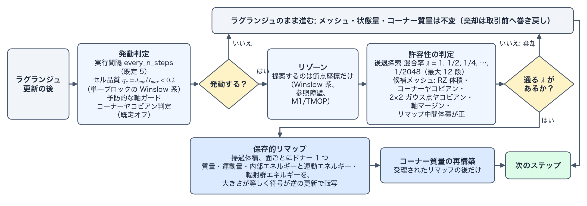

ALE（任意ラグランジュ・オイラー法） reference
TENRYU の 2D RZ（r–z 軸対称）の ALE（arbitrary Lagrangian–Eulerian、任意ラグランジュ・オイラー法）は、ラグランジュ（Lagrangian）計算のあとでメッシュの形状だけを整える「リゾーン（rezoning）」と、物質の状態を新しいメッシュへ移す「保存的リマップ（conservative remapping）」を分離している。リゾーンのソルバの種類によらず、目標メッシュは同じ許容性の判定（admissibility test）を通り、受理された目標に対してだけ、質量・運動量・内部エネルギー・輻射群エネルギーを保存的に転写する。メッシュの接続関係（mesh topology）を固定したまま節点を動かす方式に加えて、明示的に有効化する、接続関係を組み替える reconnection-based ALE（ReALE [2, 3]。mesh_mode="reale_v2"）がある。この頁は、ALE の機構、サイクルと発動条件、許容性の判定、軸帯とオイラー窓、受理されるサイクルの手順を述べる。リゾーン、リマップ、接続関係を組み替える方式の詳細は、下の 3 頁に分けて書く。この計算に固有の用語は用語の節で説明する。
リゾーン
Winslow 系・参照障壁・M1/TMOP のソルバの式と探索の手順、参照目標と M1 の目的関数。
保存的リマップ
掃過領域による保存量の転写、ドナーの選択、MS2 制限関数、運動エネルギーの収支。
接続を組み替える ALE（reale_v2）
ジェネレータとボロノイ分割による接続関係の再構成、証明書、速度射影、GPU テッセレーション。
物理機構
物質に追随するメッシュは物質界面を鋭く保つが、ずり流れ（shear flow）・渦度（vorticity）・収束時の非対称性はラグランジュメッシュに次第に無理をかける。セルはひずみ、扁平化し、ついには反転する。物質の物理が破綻するよりはるか前に、セルの最小高さが時間刻みを崩壊させる。ALE はこの問題への対処である。TENRYU はメッシュが健全なあいだはラグランジュ的な忠実さを保ち、健全でなくなった時点で、物質は動かさずにメッシュだけを動かす。リゾーンがより良い節点座標を提案し、リマップがその新しいメッシュ上へ状態量を保存的に転写する。名前の「任意（arbitrary）」は、メッシュの速度を物質速度（ラグランジュ）にも 0（オイラー、Eulerian）にも固定せず任意に選べる、という定式化上の自由を指す。TENRYU は、健全なあいだは物質速度を、必要になった時点ではリゾーンが提案する座標を採用する。
リゾーニングが扱うのは幾何であって物理ではない。リゾーンソルバ族の Winslow 型平滑化（Winslow smoothing）とその制約付き変種は、目標メッシュを構築するだけであり、解を暗黙のうちに変えてはならない。この分離を強制するのが、RZ 体積の正値性、コーナーヤコビアンの下限、ガウス点ヤコビアンの下限、そして直線探索（line search）と巻き戻しである。許容できない目標メッシュは棄却され、そのサイクルはラグランジュ計算のまま進む。そもそもリゾーンを試みるかどうかは、実行間隔、メッシュ品質指標、軸およびコーナーヤコビアンの保護判定が決める。
リマップは、同じ接続関係をもつ旧メッシュと新メッシュのあいだで保存量を移す取引（transaction）である。両者の面のあいだにできる符号付き掃過体積（signed swept volume）を用いて、厳密に帳尻を合わせる。各掃過領域は供給側セル（ドナー、donor）の状態をひとつ取り、勾配再構成（gradient reconstruction）と制限関数（limiter。既定は van Leer 型、明示的に有効化する MS2（Margolin–Shashkov 2 次 [1]）モーメントリマップではその制限関数）による単調 2 次精度（monotone second-order accuracy）で評価する。質量、化学種質量、運動量、内部エネルギーと運動エネルギー、輻射群エネルギーという示量量の収支はいずれも、ひとつの符号付き体積・ひとつのドナー・隣接セル間で大きさが等しく符号が逆の更新によって運ばれる。したがってメッシュの移動は、構成上、丸め誤差の範囲まで保存的である。運動エネルギーの収支を閉じる処理（ke_conservation_closure。後述）は、運動エネルギーのリマップと射影（リマップ後のセル運動量を節点速度へ戻す操作 — 後述）の差を物質の内部エネルギーへ繰り入れる。サブゾーンコーナー質量（subzonal corner mass。セルを節点まわりに分割したサブゾーンの質量 — 流体の砂時計制御（hourglass control）と整合エネルギー収支（compatible energy balance）に使う）が再構築されるのは受理されたリマップの後だけであり、そこがコーナー質量のラグランジュ不変性が変化しうる唯一の点である。
実運用の管理型 ALE（managed ALE）は、全体を一様に緩和するのではなく帯状に制御する。軸帯（axis band）とオイラー窓（Euler window）が再配置の作用域を限定し（RZ のラグランジュメッシュは軸で最初に破綻する）、帯の内側だけの掃過体積リマップが取引を局所に保つ。管理型 ALE は、機能を切ったときの結果の一致も維持する。コントローラが無効な場合、あるいは一度も発動しなかった場合、結果は純ラグランジュ計算とビット単位で同一である。
この計算で使う用語
ALE のサイクルの運転には、メッシュの再配置の範囲と、取引の単位に固有の語がある。メッシュの品質を表す量（許容性の判定、コーナーヤコビアン、ガウス点ヤコビアン、軸マージン）は、メッシュと幾何の頁で定義する。この頁では、ALE がそれらをいつ・何に使うかだけを述べる（発動条件、許容性と受理判定）。この節は、取引（transaction）、軸帯（axis band）、オイラー窓（Euler window）を定義する。参照メッシュ・参照障壁・M1 の目的関数はリゾーンの頁、接続関係を組み替える方式の語はreale_v2 の頁で定義する。
取引と巻き戻し
取引（transaction）は、リゾーンとリマップを 1 つの単位として、確定するか棄却するかを決める手続きである。取引の始めに、節点座標と状態量の写し（スナップショット、snapshot）を取る。目標メッシュの生成、許容性の判定、保存的リマップ、コーナー質量の再構築、再クロージャ（re-closure。定義）のどこかで失敗すれば、座標も状態量も写しから復元して（巻き戻し、rollback）、そのステップはラグランジュ計算のまま進む。すべてを通過したときだけ、座標と状態量を同時に確定する（受理）。座標だけが動いて状態量が移っていない中間状態、あるいはその逆の状態は、取引の外へ出ない。メッシュと状態量の対応が崩れると、体積から密度を復元するときに保存則が破れるので、この単位で扱う。M1 では、受理にさらに目的関数の減少量の判定が加わる（M1 の目的関数）。
軸帯、第 K 行のマージン、管理型
軸帯（axis band）は、単一ブロックの 2D RZ メッシュで、対称軸に接する動径方向の \(K\) 行のセル（行 \(i=0,\dots,K-1\)）の帯である。RZ のラグランジュメッシュは軸の近くで最初に破綻するので、軸帯の内側だけを RZ 体積の等しい配置（式は軸帯・オイラー窓・コーナー質量）へ戻し、状態量を保存的にリマップする。軸帯の外の節点と状態量は変えない。幅 \(K\) の既定は axis_band_managed_remap_width（既定 3）、上限は axis_band_managed_remap_max_width（既定 6）である。
第 \(K\) 行のマージン（row-\(K\) margin）は、軸帯の外縁のセルが、等体積（equal-volume）の配置に比べてどれだけ縮んでいるかを表す無次元の量である。行 \(K-1\) のセルの体積 \(V_{\rm actual}\) と、軸帯を等体積に再配置したときの 1 行あたりの体積 \(V_{\rm target}=\pi R_K^2\Delta z/K\) の比の、軸方向の全列にわたる最小値で、等体積の配置では 1 になる（\(R_K\) は列の両端にある第 \(K\) 行の 2 節点の半径の平均、\(\Delta z\) は行 \(K-1\) のセルの上下の面の中点の z 座標の差）。軸に接するセルの反転に対する余裕である軸マージン（定義。単位 cm²）とは別の量である。
管理型（managed）は、この再配置を、コントローラ（axis_band_managed_remap_enabled、既定 False）が、発動・幅 \(K\)・受理を決めて行う方式を指す。コントローラは、各ステップの前に発動の条件を評価する。演算子分割（operator splitting）が Strang 分割のときは、流体の各半ステップの後にも評価する（axis_band_managed_remap_every_hydro_half_step、既定 True）。発動の判定に使うマージンの下限は axis_band_managed_remap_margin_trigger（既定 1.0e-4）、運動エネルギーの返却量の上限は axis_band_managed_remap_kinetic_return_max_fraction（既定 0.1）である。
オイラー窓
オイラー窓（Euler window）は、メッシュを参照格子（初期メッシュの座標）に固定したままにする空間の領域である。矩形（shape="rectangle"。範囲は r0、r1、z0、z1）または円環（"annulus"。中心は cr、cz、内半径は rad_in、外半径は rad_out）で与える。窓の中の節点は参照格子に、窓の外の節点はラグランジュ座標に置き、その間を幅 transition_width の滑らかな遷移でつなぐ。セルの重み \(\eta\) は、セル重心の窓の外側への符号付き距離 \(d\)（窓の内側で \(d\le0\)）と、遷移の幅 \(\delta\)（transition_width）から決める。\(d\le0\) で \(\eta=1\)、\(0<d<\delta\) で \(\eta=1-t^2(3-2t)\)（\(t=d/\delta\)）、\(d\ge\delta\) で \(\eta=0\) である。節点の重みは、接するセルの重みの平均とする。目標の座標は \(\mathbf x^{target}=\eta\,\mathbf x^{ref}+(1-\eta)\,\mathbf x^{L}\)（\(\mathbf x^{ref}\) は参照格子、\(\mathbf x^{L}\) はラグランジュ座標）である。窓の内側では解像度が参照格子のまま保たれ、外側では物質に追随する。複数の窓（euler_windows）は、節点の重みの最大値で重ねる。
オイラー窓を使えるのは、CSR（compressed sparse row）接続の多ブロックの 2D RZ メッシュで、conservative_remap_enabled=True のときである。M1 とは同時に使えない。窓は、t_on_s（既定 0）から t_off_s（既定 −1。負なら終わりなし）までの時間だけ働く。
ALE サイクルと発動条件
1 サイクルの流れを図Aに示す。通常の入口はラグランジュ更新の直後である。ALE の段は、every_n_steps（既定 5。1 以下なら毎ステップ）で定まる実行間隔のステップで実行する。単一ブロックの構造格子で Winslow 系のソルバ（legacy_winslow、rz_full_metric_winslow）を使うときは、実行間隔のステップでセル品質を調べ、悪化しているときだけリゾーンする。双一次写像（bilinear map）を 2×2 のガウス点（Gauss point）で調べ、四辺形セルの品質を
と定義する。既定のしきい値は quality_threshold=0.2 で、\(q_c=1\) は平行四辺形、0 に近づくほど退化したセルであることを表す。M1 と、多ブロック（CSR 接続）のメッシュのリゾーンは、このしきい値を使わず、実行間隔のステップごとに目標メッシュを作る。spacing_ratio_threshold は設定と検証の対象ではあるものの、現行の実装では実行時の発火規則をもたない予約キーである（リポジトリの docs/NUMERICS.md §3.3 にも発火条件の定義がない）。そのため現行の発動条件には数えない。
定期実行を待たない保護経路もある。予防的な軸ガード（preventive axis guard。単一ブロックのメッシュ）は、軸マージン（定義）の最小値が、初期値の preventive_axis_guard_fraction（既定 0.1）倍を下回った時点でリゾーンを強制する。既定オフの流体計算前コーナーヤコビアン判定（Numerics.hydro.corner_jacobian_ale_trigger_enabled）は、予測される軌道上で符号付きコーナーヤコビアンが下限（corner_jacobian_floor_eps、既定 1.0e-6）に達する時刻を求め、予測される 1 ステップ分の節点変位のうち、コーナーヤコビアンが下限に達するまでに進める割合（全コーナーの最小値）がしきい値（corner_jacobian_ale_trigger_scale、既定 0.5）を下回るなら、演算子分割（operator splitting）の前に ALE を起動する。参照障壁（用語）は、セル重心の \(\sin\theta\)、コーナーヤコビアンの比、対角コーナーの辺長の比を、専用の発動条件として使う。

許容性と受理判定
リゾーン反復が収束したことと、メッシュが受理されることは別問題である。受理は、許容性の判定（定義）で決まる。候補メッシュは有効セル（active cell）ごとに、符号付き RZ 体積が正であること、コーナーヤコビアンが正であること、2×2 ガウス点ヤコビアンが下限以上であることを満たし、軸上のセルではさらに軸マージンが正であることを満たす必要がある。方向分離型リマップ（directionally split remap）では、最初の掃引で生じる中間体積も正でなければならない。単一ブロックのメッシュの既定の後退探索（backtracking）は、混合係数 \(\lambda\)（ラグランジュメッシュから提案メッシュへの混合率）を 1、1/2、1/4、…と半分ずつ小さくして最大 12 段（最小は 1/2048）まで順に試し、最初に通った値を採る。明示的に有効化する安全な後退探索（safe_backtrack_enabled）はまず \(\lambda=0\)、すなわちラグランジュメッシュそのものを検証する。続いて \(\lambda=2^{-e}\)（指数 \(e\) は 0 から safe_backtrack_min_exp（既定 20）まで）を大きい方から試し、最初に通った値を \(\lambda_{\rm lo}\) とする。\(\lambda_{\rm lo}\) とその 2 倍（上限 1）のあいだを safe_backtrack_binary_iters（既定 8）回の二分探索（bisection）で詰めて、許容できる最大の混合率を求める。正の \(\lambda\) がひとつも通らなければ、メッシュと状態量を取引前へ巻き戻す。
判定の下限は、方式によって異なる。単一ブロックの既定の後退探索では、2×2 ガウス点のヤコビアンのどれかが負、コーナーヤコビアンのどれかが 0 以下、軸マージンが 0 以下、のいずれかなら不受理とする（reject_zero_gauss_j=True（既定 False）では、ガウス点ヤコビアンの最小値が \(\max(10^{-30},\,10^{-8}J_{\max})\) 以下のときも不受理とする）。参照障壁、M1、中心パッチなどの候補メッシュの判定器（candidate-mesh oracle）は、RZ 体積・コーナーヤコビアン・ガウス点ヤコビアンのそれぞれが、参照メッシュの値に対する相対下限（既定 1.0e-8）を割らないことを求める（リゾーンソルバ族）。
この判定を分離しているため、「目的関数が下がった」「Winslow 残差が小さい」というだけでは確定されない。参照目標、M1 目標、管理型の修復のいずれも、最後には同じ幾何の判定器と、保存的リマップの正値性検査を通る。
軸帯・オイラー窓・コーナー質量
axis_band_managed_remap_enabled は既定オフの軸近傍コントローラ（軸帯）で、単一ブロックのメッシュ（Mesh.topology_scheme="single_block"）にだけ使える。帯の幅 \(K\)（行数）の既定は axis_band_managed_remap_width（既定 3）、上限は axis_band_managed_remap_max_width（既定 6）である。第 \(K\) 行のマージン（定義）が、既定の幅で 1 を下回り、かつ、その幅から上限までのいずれかの \(K\) で第 \(K\) 行のマージンが axis_band_managed_remap_margin_trigger（既定 1.0e-4）以上になるときに、コントローラは、そのような最小の \(K\) から、帯 \(i\in[0,K-1]\) だけを RZ 体積が等しくなる目標
へリマップする。ここで \(R_K(j)\) は軸方向添字 \(j\) における固定された第 \(K\) 行節点の半径で、帯の節点は回転体体積が等しくなるよう再配置され、軸方向座標は第 \(K\) 行に従う。選んだ \(K\) から上限まで 1 ずつ広げながら、各 \(K\) で帯のリマップを試す。正値性、保存収支、運動エネルギーの返却量の上限（axis_band_managed_remap_kinetic_return_max_fraction、既定 0.1。帯のセルの内部エネルギーに対する比）、EOS による再クロージャを検査し、最初にすべてを満たした \(K\) を採る。すべての \(K\) が失敗した場合は、状態量を変えずに従来どおり時間刻みを縮小する経路へ戻る。質量、運動量、電子・イオンの内部エネルギー、輻射群は保存的に運ばれる。節点への射影に伴う運動エネルギーの差だけは、構成上、警告レベルの扱いである。
euler_window.enabled は、明示的に有効化する、CSR 接続の多ブロック領域向けの目標メッシュである（オイラー窓）。矩形または円環の内側では固定した参照格子を、外側ではラグランジュ座標を使い、その間を C¹ 連続（C¹-continuous）な遷移重みで混合する。混合された目標メッシュは候補メッシュの判定を通過したとき、受理された M1 リゾーンと同じ手順で、そのリマップの目標メッシュとして参照座標の位置に置かれ、保存的リマップの取引に入る。リマップの後、参照座標は元の値に戻る。保存的リマップが必須であり、M1/TMOP とは同時に使えない。
流体側のサブゾーンコーナー質量は、純ラグランジュ運動のあいだは固定される。幾何だけを試して棄却されたリゾーンでは更新せず、受理されたリゾーンとリマップの後に、リマップ後のセル質量と新しいメッシュからのみ再構築する。この更新順序が、エネルギー整合な仕事と、砂時計モード抑制・サブゾーン圧力のラグランジュ不変性を守る。
受理される ALE サイクルの手順
発動条件を評価する。 ALE の入口で、定期実行の間隔と、セル品質・軸マージン・コーナーヤコビアンの保護判定を評価する。どれも発火しなければ、ラグランジュメッシュと状態量をそのまま保持する。
目標メッシュを構築する。 選択した Winslow 系、参照障壁、または M1/TMOP のソルバを実行し、節点座標だけを提案する。管理型コントローラでは、提案の範囲を選んだ軸帯またはオイラー窓に限定する。
許容性を判定する。 符号付き RZ 体積が正であること、コーナーヤコビアンと 2×2 ガウス点ヤコビアンの下限、該当する場合は軸マージンを、候補メッシュについて検査する。必要なら直線探索で変位を縮小する。明示的に有効化した安全な後退探索は \(\lambda=0\) を検証したうえで \(\lambda=2^{-e}\) を探索し、許容できる最大の混合率まで細分化する。正の混合率がひとつも通らなければ、取引前のスナップショットを復元してラグランジュ計算に留まる。
掃過領域を構築する。 旧い面と新しい面のあいだに向きの付いた多角形を作り、その軸対称な符号付き体積を厳密に評価する。2 次精度の経路では 1 次モーメントも厳密に求める。最初の方向掃引で生じる中間体積は正でなければならない。
保存量の収支を転写する。 掃過体積の符号からドナーを選び、指定された van Leer または MS2 の制限関数で状態を再構成し、面ごとの流束を一度だけ評価して両側のセルへ符号を反転して適用する。質量、化学種と物質の収支、R/Z 方向運動量、電子・イオンの内部エネルギー、輻射群エネルギー、有効化されている運動エネルギー診断の収支は、すべてこの取引に従う。掃引ごとの正値性は引き続き巻き戻しの判定条件である。
運動エネルギーの収支を閉じて確定する。 リマップ後の運動量を節点へ射影し、有効であれば
ke_conservation_closureの処理で運動エネルギーの差を内部エネルギーへ繰り入れる。続いて、リマップ後のセル質量と受理されたメッシュからコーナー質量を再構築し、再クロージャを行う。受理の際はメッシュと状態量をひとつの取引として同時に確定し、失敗した場合は両方を復元する。機能を切ったときの一致を検査する。 保存収支は、取引を受理する条件である。ALE 無効・一度も発動しない・恒等モードの各実行については、純ラグランジュ計算とビット単位で一致することを検査する。この、機能を切ったときのビット一致の検査と保存の検査に通ることが、ALE 機能全体の受入れ条件である。
namelist による制御
以下は Numerics.ale の主要キーの抜粋である。全項目と検証規則は namelist リファレンスを参照のこと。
| キー | 既定値 | 用途 |
|---|---|---|
enabled | False | 2D RZ の ALE リゾーン・リマップサイクル全体の有効化（Numerics.ale 直下のキーである。rezoning という下位ブロックは存在しない）。 |
every_n_steps | 5 | 定期リゾーンの実行間隔。 |
quality_threshold | 0.2 | 単一ブロックの構造格子で Winslow 系のソルバを使うとき、\(\min q_c\) がこの値を下回ると品質判定で発動。 |
axis_band_managed_remap_enabled | False | 軸近傍の帯だけを等体積目標へ移す管理型リマップ。 |
euler_window.enabled | False | 局所オイラー参照目標と C1 遷移の有効化。 |
検証
- 機能オフ経路のビット一致検査は、ALE を無効にした実行が変更前の場と履歴にビット単位で一致することを確認する。
ale_identity_modeは ALE の入口をラグランジュ更新の直後で素通りさせるヌル試験（null test）である。ALE を有効にした実行が、同じ時間刻みで ALE を切った実行と場のレベルで一致することを要求する。- 2D RZ の統合試験（integration tests。試験のタグの凡例の I 系列）は、実運用 ALE のリゾーン、許容性判定、保存的リマップ、軸・マルチブロック経路を、実際の連成計算全体を通して動作させる。
参考文献
- L. G. Margolin and M. J. Shashkov, "Second-Order Sign-Preserving Conservative Interpolation (Remapping) on General Grids," J. Comput. Phys. 184, 266–298 (2003). doi:10.1016/S0021-9991(02)00033-5
- R. Loubère, P.-H. Maire, M. Shashkov, J. Breil, and S. Galera, "ReALE: A Reconnection-Based Arbitrary-Lagrangian–Eulerian Method," J. Comput. Phys. 229, 4724–4761 (2010). doi:10.1016/j.jcp.2010.03.011
- R. Loubère, P.-H. Maire, and M. Shashkov, "ReALE: A Reconnection Arbitrary-Lagrangian–Eulerian Method in Cylindrical Geometry," Comput. Fluids 46, 59–69 (2011). doi:10.1016/j.compfluid.2010.08.024